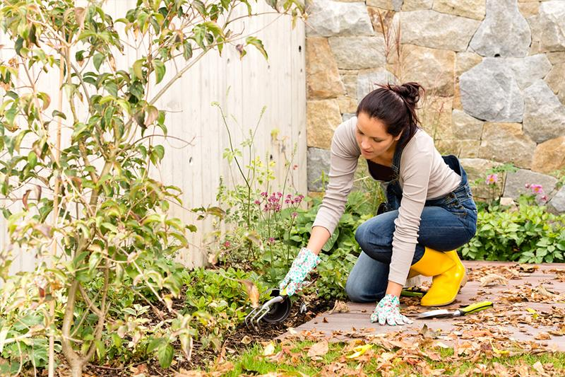

Selected Work
``` ```
```
Thoughtful Residential Design for Home and Garden
Provence Landscape Design & Architecture is a small design studio in Santa Monica, CA focused on creating beautiful, comfortable, and enduring residential environments. We believe that thoughtful design can enrich everyday life, bringing people closer to nature, family, and the places they call home.
Founded by Fay Ramani (Columbia University, class of 2012), the studio draws from professional experience on projects in New York and Los Angeles while maintaining a personal, hands-on approach to every commission. As a boutique practice, we intentionally remain small, allowing us to work closely with each client and provide attentive service throughout the design process.
Whether designing a new garden, reimagining an outdoor living space, or planning a residential property from the ground up, our goal is to create places that feel welcoming, timeless, and deeply connected to their surroundings.
```Every home has its own story. We begin by listening carefully to our clients, understanding how they live, gather, relax, and experience their outdoor spaces. Rather than imposing a particular style, we seek to create designs that feel authentic to the people who live there.
We believe successful residential design balances beauty, practicality, sustainability, and long-term value. The result is a landscape that grows gracefully over time and continues to bring enjoyment for years to come.
```
```Fay is an architectural designer with experience contributing to projects in New York and Los Angeles. Through Provence Landscape Design & Architecture, she focuses on creating thoughtful residential spaces where architecture, landscape, and everyday life come together naturally.
Her approach emphasizes careful listening, clear communication, and attention to detail. Every project is treated as a unique collaboration between designer, client, and site.
```
Interested in discussing a residential project? We'd be happy to hear from you.
Email: provence-design@proton.me
```